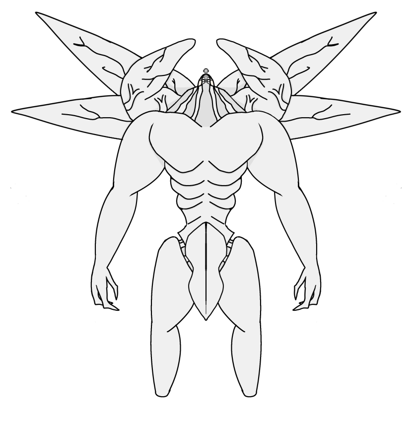
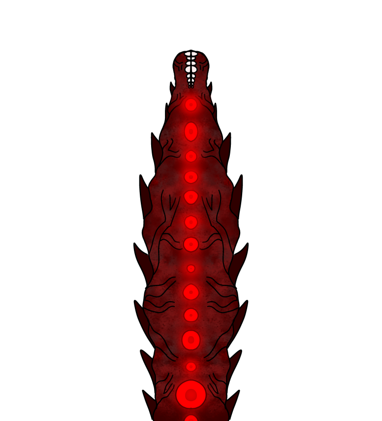
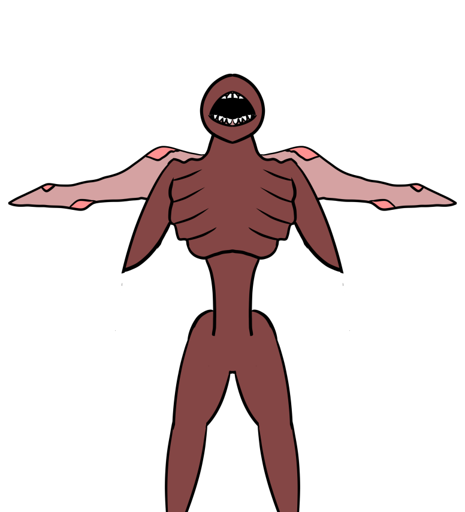
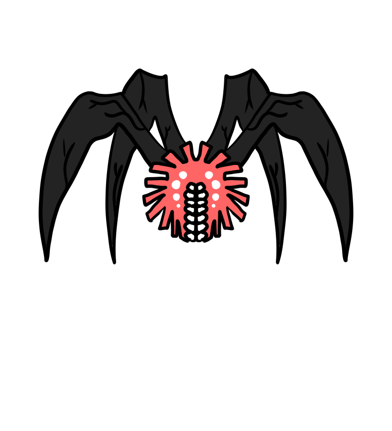
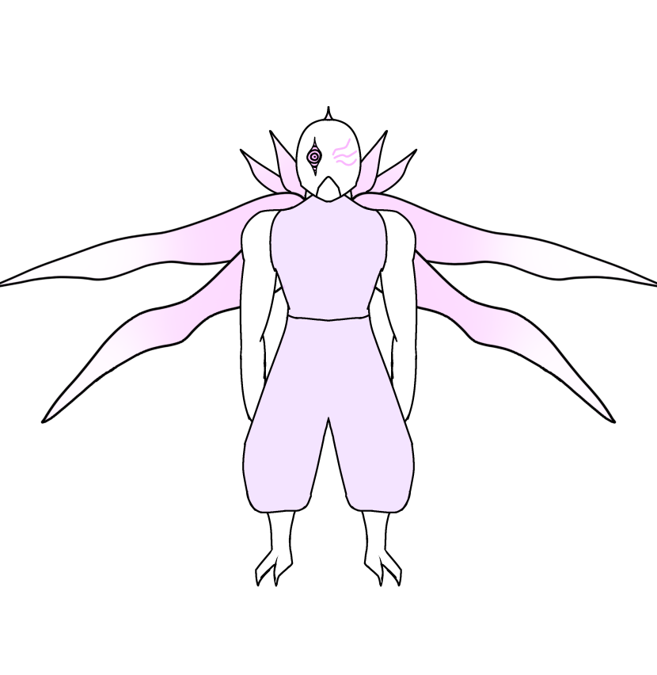

Hello, and welcome to a collection of my hobbies!
One of my favorite hobbies I have is drawing, here are some things that I've made
What was the purpose of the fifth character?
Another hobby of mine is going to the gym 2-3 times a week, Working both legs and upper body
I also love playing games with friends during my free time, you can find games I like to play on the Favorite Games page